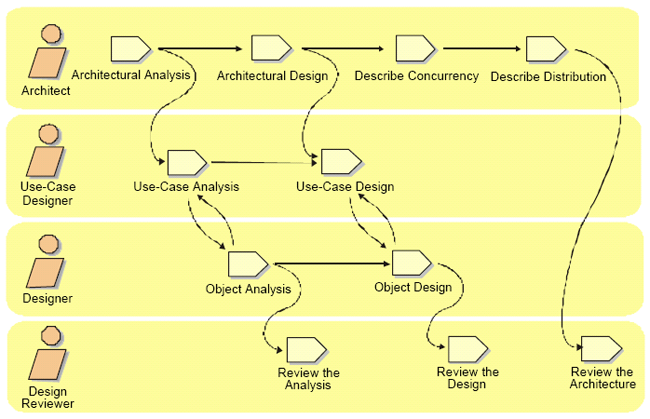
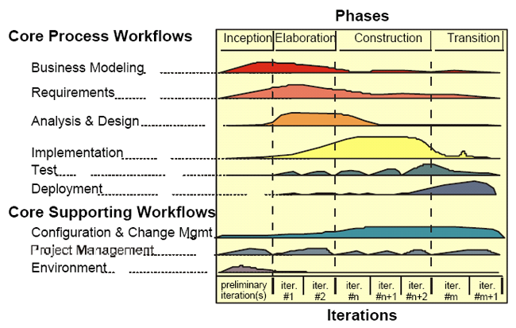
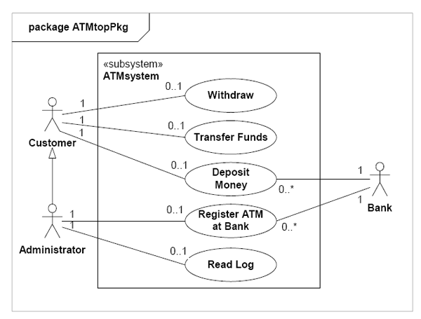
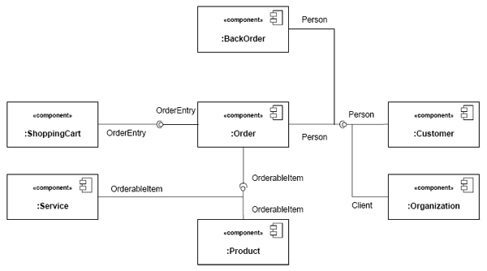

A mere enumeration of all workers, activities and artifacts does not quite
constitute a process. We need
way to describe meaningful sequences of activities that produce some valuable
result, and to show
interactions between workers.
A workflow is a sequence of activities that produces a result of observable
value.
In UML terms, a workflow can be expressed as a sequence diagram, a collaboration
diagram, or an activity
diagram. We use a form of activity diagrams in this white paper.

Example of workflow.
Note that it is not always possible or practical to represent all of the
dependencies between activities. Often
two activities are more tightly interwoven than shown, especially when they
involve the same worker or the
same individual. People are not machines, and the workflow cannot be interpreted
literally as a program for
people, to be followed exactly and mechanically.
There are nine core process workflows in the Rational Unified Process, which
represent a partitioning of all
workers and activities into logical groupings.

The nine core process workflows.
The core process workflows are divided into six core “engineering” workflows:
And three core “supporting” workflows:
Although the names of the six core engineering workflows may evoke the
sequential phases in a traditional
waterfall process, we should keep in mind that the phases of an iterative
process are different and that these
workflows are revisited again and again throughout the lifecycle. The actual
complete workflow of a
project interleaves these nine core workflows, and repeats them with various
emphasis and intensity at each
iteration.
One of the major problems with most business engineering efforts, is that the
software engineering and the
business engineering community do not communicate properly with each other. This
leads to that the
output from business engineering is not used properly as input to the software
development effort, and viceversa.
The Rational Unified Process addresses this by providing a common language and
process for both
communities, as well as showing how to create and maintain direct traceability
between business and
software models.
In Business Modeling we document business processes using so called business use
cases. This assures a
common understanding among all stakeholders of what business process needs to be
supported in the
organization. The business use cases are analyzed to understand how the business
should support the
business processes. This is documented in a business object-model.
Many projects may choose not to do business modeling.
The goal of the Requirements workflow is to describe what the system should
do and allows the developers
and the customer to agree on that description. To achieve this, we elicit,
organize, and document required
functionality and constraints; track and document tradeoffs and decisions.
A Vision document is created, and stakeholder needs are elicited. Actors are
identified, representing the
users, and any other system that may interact with the system being developed.
Use cases are identified,
representing the behavior of the system. Because use cases are developed
according to the actor's needs, the
system is more likely to be relevant to the users. The following figure shows an
example of a use-case
model for a recycling-machine system.

An example of a use-case model with actors and use cases.
Each use case is described in detail. The use-case description shows how the
system interacts step by step
with the actors and what the system does. Non-functional requirements are
described in Supplementary
Specifications.
The use cases function as a unifying thread throughout the system's development
cycle. The same use-case
model is used during requirements capture, analysis & design, and test.
The goal of the Analysis & Design workflow is to show how the system will be
realized in the
implementation phase. You want to build a system that:
Analysis & Design results in a design model and optionally an analysis model.
The design model serves as
an abstraction of the source code; that is, the design model acts as a
'blueprint' of how the source code is
structured and written.
The design model consists of design classes structured into design packages and
design subsystems with
well-defined interfaces, representing what will become components in the
implementation. It also contains
descriptions of how objects of these design classes collaborate to perform use
cases. The next figure shows
part of a sample design model for the recycling-machine system in the use-case
model shown in the
previous figure.

Part of a design model, a composite structure of components, with connector
wiring between provided and required interfaces of parts (Note: “Client”
interface is a subtype of “Person”).
The design activities are centered around the notion of architecture. The
production and validation of this
architecture is the main focus of early design iterations. Architecture is
represented by a number of
architectural views. These views capture the major structural design
decisions. In essence, architectural
views are abstractions or simplifications of the entire design, in which
important characteristics are made
more visible by leaving details aside. The architecture is an important vehicle
not only for developing a
good design model, but also for increasing the quality of any model built during
system development.
The purpose of implementation are:
The system is realized through implementation of components. The Rational
Unified Process describes
how you reuse existing components, or implement new components with well defined
responsibility,
making the system easier to maintain, and increasing the possibilities to reuse.
Components are structured into Implementation Subsystems. Subsystems take the
form of directories, with
additional structural or management information. For example, a subsystem can be
created as a directory or
a folder in a file system, or a subsystem in Rational/Apex for C++ or Ada, or
packages using Java.™
The purposes of testing are:
The Rational Unified Process proposes an iterative approach, which means that
you test throughout the
project. This allows you to find defects as early as possible, which radically
reduces the cost of fixing the
defect. Test are carried out along three quality dimensions reliability,
functionality, application
performance and system performance. For each of these quality dimensions, the
process describes how you
go through the test lifecycle of planning, design, implementation, execution and
evaluation.
Strategies for when and how to automate test are described. Test automation is
especially important using
an iterative approach, to allow regression testing at then end of each
iteration, as well as for each new
version of the product.
The purpose of the deployment workflow is to successfully produce product
releases, and deliver the
software to its end users. It covers a wide range of activities including:
In many cases, this also includes activities such as:
Although deployment activities are mostly centered around the transition phase,
many of the activities need
to be included in earlier phases to prepare for deployment at the end of the
construction phase.
The Deployment and Environment workflows of the Rational Unified Process contain
less detail than other
workflows.
Software Project Management is the art of balancing competing objectives,
managing risk, and overcoming
constraints to deliver, successfully, a product which meets the needs of both
customers (the payers of bills)
and the users. The fact that so few projects are unarguably successful is
comment enough on the difficulty
of the task.
This workflow focuses mainly on the specific aspect of an iterative development
process. Our goal with
this section is to make the task easier by providing:
It is not a recipe for success, but it presents an approach to managing the
project that will markedly
improve the odds of delivering successful software. [14]
In this workflow we describe how to control the numerous artifacts produced
by the many people who
work on a common project. Control helps avoid costly confusion, and ensures that
resultant artifacts are not
in conflict due to some of the following kinds of problems:
This workflow provides guidelines for managing multiple variants of evolving
software systems, tracking
which versions are used in given software builds, performing builds of
individual programs or entire
releases according to user-defined version specifications, and enforcing
site-specific development policies.
We describe how you can manage parallel development, development done at
multiple sites, and how to
automate the build process. This is especially important in an iterative process
where you may want to be
able to do builds as often as daily, something that would become impossible
without powerful automation.
We also describe how you can keep an audit trail on why, when and by whom any
artifact was changed.
This workflow also covers change request management, i.e. how to report defects,
manage them through
their lifecycle, and how to use defect data to track progress and trends.
The purpose of the environment workflow is to provide the software
development organization with the
software development environment—both processes and tools—that are needed to
support the development
team.
This workflow focuses on the activities to configure the process in the context
of a project. It also focus on
activities to develop the guidelines needed to support a project. A step-by-step
procedure is provided
describing how you implement a process in an organization.
The environment workflow also contains a Development Kit providing you with the
guidelines, templates
and tools necessary to customize the process. The Development Kit is described
in more detail in the
section " Development Kit for Process Customization" found later in this paper.
Certain aspects of the Environment workflow are not covered in the process such
as selecting, acquiring,
and making the tools work, and maintaining the development environment.